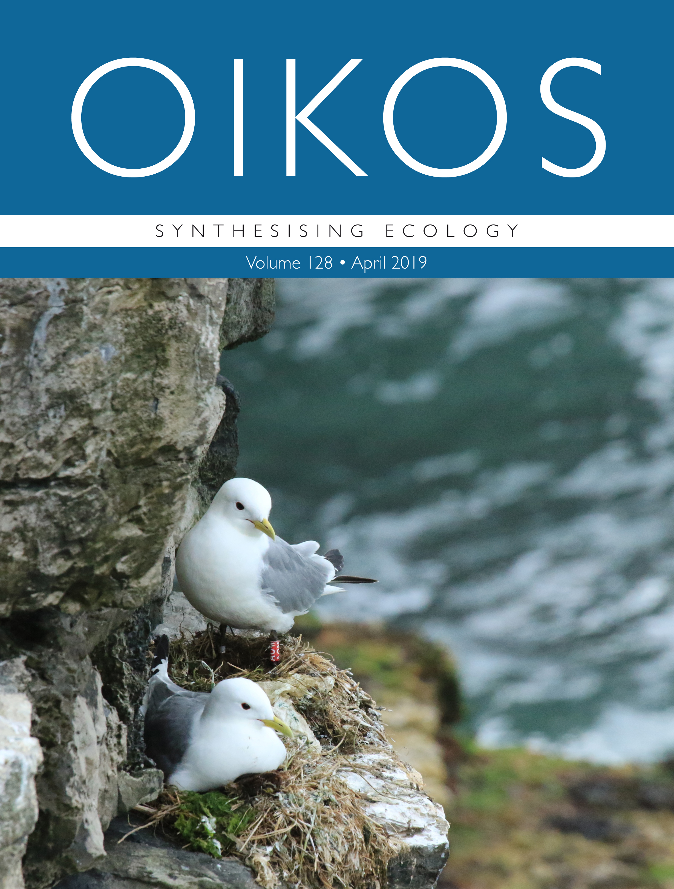

Publications
2023
Votier, S., Corcoran, G., Carr, P., Dunn, R., Freeman, R., Nicoll, M., Wood, H., & Trevail, A. (2023). Geolocation and immersion loggers reveal adult red-footed boobies are year-round residents in the tropical indian ocean. http://dx.doi.org/10.22541/au.168721566.68754438/v1
Langley, L. P., Lang, S., Ozsanlav-Harris, L., & Trevail, A. (2023). ExMove: An open-source toolkit for processing and exploring animal tracking data in r. http://dx.doi.org/10.1101/2023.05.16.540922
Grémillet, D., Ponchon, A., Provost, P., Gamble, A., Abed-Zahar, M., Bernard, A., Courbin, N., Delavaud, G., Deniau, A., Fort, J., Hamer, K. C., Jeavons, R., Lane, J. V., Langley, L., Matthiopoulos, J., Poupart, T., Prudor, A., Stephens, N., Trevail, A., … Jeglinski, J. W. E. (2023). Strong breeding colony fidelity in northern gannets following high pathogenicity avian influenza virus (HPAIV) outbreak. http://dx.doi.org/10.1101/2023.05.02.539030
Carr, P., Trevail, A. M., Koldewey, H. J., Sherley, R. B., Wilkinson, T., Wood, H., & Votier, S. C. (2023). Marine Important Bird and Biodiversity Areas in the Chagos Archipelago. Bird Conservation International, 33, e29. https://doi.org/10.1017/S0959270922000247
2022
Descamps, S., Harris, S. M., Fluhr, J., Bustamante, P., Cherel, Y., Trevail, A. M., Brault-Favrou, M., & Patrick, S. C. (2022). Variation in Antarctic Petrel Foraging Ecology: Not All Individuals Specialize on Krill. Frontiers in Marine Science, 9, 809852. https://doi.org/10.3389/fmars.2022.809852
2021
Trevail, A. M., Green, J. A., Bolton, M., Daunt, F., Harris, S. M., Miller, P. I., Newton, S., Owen, E., Polton, J. A., Robertson, G., Sharples, J., & Patrick, S. C. (2021). Environmental heterogeneity promotes individual specialisation in habitat selection in a widely distributed seabird. Journal of Animal Ecology, 90(12), 2875–2887. https://doi.org/10.1111/1365-2656.13588
Carr, P., Trevail, A., Bárrios, S., Clubbe, C., Freeman, R., Koldewey, H. J., Votier, S. C., Wilkinson, T., & Nicoll, M. A. C. (2021). Potential benefits to breeding seabirds of converting abandoned coconut plantations to native habitats after invasive predator eradication. Restoration Ecology, 29(5). https://doi.org/10.1111/rec.13386
2020
Hays, G. C., Koldewey, H. J., Andrzejaczek, S., Attrill, M. J., Barley, S., Bayley, D. T. I., Benkwitt, C. E., Block, B., Schallert, R. J., Carlisle, A. B., Carr, P., Chapple, T. K., Collins, C., Diaz, C., Dunn, N., Dunbar, R. B., Eager, D. S., Engel, J., Embling, C. B., … Curnick, D. J. (2020). A review of a decade of lessons from one of the world’s largest MPAs: Conservation gains and key challenges. Marine Biology, 167(11), 159. https://doi.org/10.1007/s00227-020-03776-w
Williams, H. J., Taylor, L. A., Benhamou, S., Bijleveld, A. I., Clay, T. A., Grissac, S., Demšar, U., English, H. M., Franconi, N., Gómez‐Laich, A., Griffiths, R. C., Kay, W. P., Morales, J. M., Potts, J. R., Rogerson, K. F., Rutz, C., Spelt, A., Trevail, A. M., Wilson, R. P., & Börger, L. (2020). Optimizing the use of biologgers for movement ecology research. Journal of Animal Ecology, 89(1), 186–206. https://doi.org/10.1111/1365-2656.13094
Busdieker, K. M., Patrick, S. C., Trevail, A. M., & Descamps, S. (2020). Prey density affects predator foraging strategy in an Antarctic ecosystem. Ecology and Evolution, 10(1), 350–359. https://doi.org/10.1002/ece3.5899
2019

Trevail, A. M., Green, J. A., Sharples, J., Polton, J. A., Miller, P. I., Daunt, F., Owen, E., Bolton, M., Colhoun, K., Newton, S., Robertson, G., & Patrick, S. C. (2019). Environmental heterogeneity decreases reproductive success via effects on foraging behaviour. Proceedings of the Royal Society B: Biological Sciences, 286(1904), 20190795. https://doi.org/10.1098/rspb.2019.0795
Trevail, A. M., Green, J. A., Sharples, J., Polton, J. A., Arnould, J. P. Y., & Patrick, S. C. (2019). Environmental heterogeneity amplifies behavioural response to a temporal cycle. Oikos, 128(4), 517–528. https://doi.org/10.1111/oik.05579
2017
Provencher, J. F., Bond, A. L., Avery-Gomm, S., Borrelle, S. B., Bravo Rebolledo, E. L., Hammer, S., Kühn, S., Lavers, J. L., Mallory, M. L., Trevail, A. M., & Van Franeker, J. A. (2017). Quantifying ingested debris in marine megafauna: A review and recommendations for standardization. Analytical Methods, 9(9), 1454–1469. https://doi.org/10.1039/C6AY02419J
2015
Trevail, A. M., Gabrielsen, G. W., Kühn, S., & Van Franeker, J. A. (2015). Elevated levels of ingested plastic in a high Arctic seabird, the northern fulmar (Fulmarus glacialis). Polar Biology, 38(7), 975–981. https://doi.org/10.1007/s00300-015-1657-4